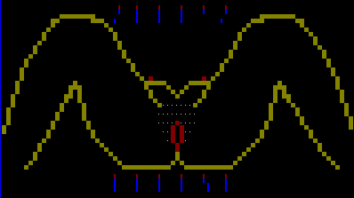
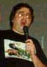
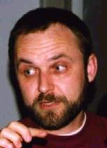
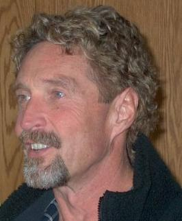

| Занимательная вирусология. Часть 2
|
|---|
Внимание! У сайта два зеркала: http://drmad.chat.ru и
http://www.nf-team.org/drmad/kostya/.
Возможно, на одном из них лежит более свежий вариант этой страницы!
[ На обложку "Занимательной вирусологии" ]
Милостивые государи!
Вашему вниманию предлагается
второй выпуск "Занимательной Вирусологии".
Долгое время, практически с середины 80-х годов,
ведутся споры - способен ли вирус повредить аппаратное обеспечение компьютера, спалить дисплей или поцарапать
поверхность винчестера. До последнего времени достоверно известен был лишь алгоритм, выполнение которого
могло привести к "выжиганию" люминофора на монохромных дисплеях выпуска первой половины 80-х годов. Сейчас,
в связи с широчайшей номенклатурой "железа" - винчестеров, мониторов, видео- и аудиокарт и пр., обладающих
различными свойствами, совершенно невозможно представить себе универсальный способ порчи оборудования.
И вот в июне 1998 года практически все крупные вирусологи мира сообщили о появлении нового вируса
Win32.CIH, который "живет" в Windows 95/98 и по 26-м числам каждого месяца
необратимо портит содержимое FLASH-памяти современных материнских плат (некоторых, предназначенных
для i80486 и большинства, предназначенных для Pentium, Pentium II). Чтобы вылечить покалеченный компьютер,
даже специалисту придется немало повозиться.
Вирус был написан в Тайване и в течение мая-июня 1998 г. разослан в ряд электронных конференций Интернет.
27 июня сообщения о повреждениях, нанесенных этим вирусом, поступили из Юго-Восточной Азии, из США
и ряда других стран. У нас этот вирус также обнаружен - в середине лета 1998 г. в Москве и в Новосибирске,
а в начале осени того же года вышли и разбежались по стране пиратские CD с популярными компьютерными
играми, зараженные этим вирусом!
Пользуйтесь антивирусами версий выпуска не раньше середины лета 1998 года!
[На начало]
Существует класс вирусов,
две разных копии которых полностью отличаются друг от друга, так что без специальных
ухищрений невозможно установить, что они "одной породы"! Я говорю от так называемых
полиморфных вирусах, или вирусах - призраках.
Вот первые 10 ассемблерных команд трех различных копий одного из полиморфных вирусов.
Ну и как на Ваш взгляд - много похожего?
sub bx,bx
add bx,0116
mov cx,00EA
nop
mov al,2E
xor [bx],al
add bx,01
loop 0000000A
cld
cld
|
mov bx,0116
mov cx,00E
nop
xor [bx],37
add bx,01
loop 00000007
std
std
std
std
|
xor bx,bx
add bx,0116
sub cx,cx
add cx,00EA
xor b,[bx],03
add bx,01
loop 0000000C
cli
nop
stc
|
Между тем, однозначное диагностирование и успешное излечение любой болезни, в том числе
и компьютерной, в качестве необходимого условия включает постоянство симптомов. Теперь
становится понятным, с какой нелегкой проблемой столкнулись авторы антивирусных
программ, когда в первой половине 1990-х годов им стали присылать на лечение программы,
зараженные вирусами "без лица".
Одним из первых полиморфных вирусов был вирус Phoenix, который
шифровал свое тело по переменному ключу и генерировал различные варианты расшифровщиков.
В 1994-95 годах мир поразила эпидемия вируса Onehalf, который не только
шифровал свое тело по переменному ключу, но еще и раскидывал фрагменты многовариантного
расшифровщика по всей зараженной программе в виде нескольких случайно расположенных пятен -
накося, выкуси! А вот автор вируса Ply решил не заниматься шифрованием,
а вместо этого заставил свое "детище" случайным образом постоянно "перемешивать" свой код.
Появились и были опубликованы программные технологии, которые автоматизировали процесс
создания полиморфных вирусов, что позволяло любым авторам примитивнейших вирусов делать
из них труднообнаруживаемых "монстров". Одной из известнейших и сложнейших для обнаружения
и излечения является технология SMEG; до сих пор одним из параметров
при тестировании качества антивирусов является их способность диагностировать SMEG-
вирусы: 98% или 99%?! Поддержали гонку полиморфиков и отечественные вирусописатели:
вирусы серий RDA.Fighter, Zhenghi и
NutCracker содержат гораздо более сложные по отношению даже к
SMEG алгоритмы!
Слава Богу, авторы антивирусных программ нашли противоядие против полиморфных вирусов.
Но об этом мы поговорим в другой статье "Занимательной Вирусологии".
[На начало]
Здесь я хочу предложить Вашему вниманию
кратий перечень людей, известных в вирусологии, с указанием "заслуг". Многие не попали в этот список по
моему недосмотру или незнанию, но кое-кого я специально не включил сюда по причинам, о которых не
хотел бы распространяться. Тем не менее, напишите мне мылом или в
гостьбуку - кого, по Вашему мнению, я неоправданно упустил, и какие сведения
исказил.
-
Безруков Н.Н. - один из первых отечественных вирусологов. В конце 1980-х и начале
1990-х годов, проживая и работая в Киеве, опубликовал ряд книг на вирусологическую тему ("Компьютерная
вирусология" и пр.). В настоящее время живет и работает за границей ( кажется, в США).
Данилов И. - автор самого популярного на территории бывш. СССР антивируса
DrWeb. Кроме того не без оснований считается создателем ряда коллекционных вирусов
сверхмалой длины.
Касперский Е. - автор AVP - одного из самых мощных в мире
антивирусов. Опубликовал ряд книг на вирусологическую тему ("Компьютерные вирусы в MSDOS" и др.).
Лозинский Д.Н. - автор антивируса AidsTest, на протяжении
первой половины 1990-х являвшегося не просто самым популярным, но практически единственным антивирусом
на территории бывш. СССР. В настоящее время практически отошел от вирусологии, работает
в руководстве компании "Диалог-Наука", занимающейся распространением антивирусов
DrWeb и AdInf.
Мостовой Д. - автор антивирусного ревизора AdInf. Выполняет
обязанности модератора в FIDO-эхе fido.su.virus.
Хижняк П.Л.- автор вышедшей в начале 1990-х годов книжки "Пишем вирус и антивирус",
ставшей настольным пособием по написанию множества примитивных вирусов.
Bontchev Vesselin - известный болгарский вирусолог, опубликовал ряд теоретических
работ на вирусологическую тему. В настоящее время живет и работает в Германии.
Burger Ralf - немецкий (?) вирусолог. В середине 1980-х годов первым обратил внимание
на возможность инфицирования EXE- и COM-файлов в MSDOS и опубликовал соответствующие алгоритмы.
Сohen Fred (Доктор Коэн) - теоретик программирования. Первым в начале 1980-х годов применил
термин "компьютерный вирус" к классу самовоспроизводящихся программ.
McAfee John - владелец фирмы, выпускающей ряд антивирусных родуктов. В первой
половине 1990-х годов широко был известен комплект антивирусов Scan/Clean этой фирмы.
Solomon Alan - владелец фирмы, выпускающей широко известный антивирус
DrSolomon (Великобритания). По некоторым сведениям в конце лета 1998 г. закорефанился (небесплатно)
с McAfee. И куда смотрят антимонопольные комитеты?
Black Baron - английский вирусописатель, автор сверхсложной полиморфной
технологии SMEG и ряда особо опасных вирусов на ее основе. В 1994 г. был вычислен и
арестован Лондонской полицией.
Jacky Qwerty - член 29A - широко известной в конце 1990-х годов
международной группировки вирусописателей. Автор одного из самых распространенных в мире вирусов
WM.Cap и Win32.Cabanas - первого в истории 32-разрядного вируса,
корректно работающего в Windows 95 и Windows/NT.
Dark Avenger (также откликается на прозвище Eddie) - широко
известный в конце 1980-х и начале 1990-х годов болгарский вирусописатель. Внес немало революционных идей в
практику вирусописательства.
LovinGod - духовный лидер SGWW - крупнейшей отечественной
группировки вирусописателей. До 1996 г. жил в Киеве, сейчас обитает где-то Москве. Извиняюсь за неточности
в прошлой версии странички. Подробности о subj см. тут.
Morris Robert Jr. (Роберт Моррис Младший) - автор широко известного сетевого вируса,
заразившего в 1987 году тысячи машин в разных концах мира, подключенных к тогдашней версии сети Интернет.
Был арестован, но впоследствие оправдан американским судом.
Sarah Gordon - известная американская специалистка по психологии вирусописательства. На мой
пристрастный взгляд, "специалистка" она лишь по меркам тупых и жирных, для которых и пишет свои "исследования" и "обзоры".
(см.здесь ).
[На начало]
Об этом уже так много писалось, что лишнее
напоминание становится просто дурным тоном. Поэтому я просто приведу практически без комментариев
ряд цитат, расположив их в хронологическом порядке.
Doctor WEB уличен в краже технологий AVP!
"Doctor WEB уличен в краже технологий AVP!" - заявляет
Евгений Касперский.
Специалисты Лаборатории Касперского установили, что российский
талант И.Данилов на поверку оказался самым обычным хакером,
использующим чужие программы. Фирмы-дистрибьютеры распространяли
программу DrWeb, не зная этого!
Анализ кодов популярного российского антивируса DrWeb показал,
что на самом деле его авторы на протяжении нескольких лет переписывали
наиболее сложные алгоритмы поиска вирусов из другой отечественной
антивирусной разработки - AVP Касперского.
[...]
По рекомендации РосАПО (Российское Агентство по Авторским
Правам) дело о незаконном использовании технологий AVP в программе
DrWeb передается в Арбитражный Суд Российской Федерации. Лаборатория
Касперского добивается решения Арбитража о запрещении коммерческого и
некоммерческого распространения всех версий DrWeb, в которых
используются технологии AVP.
[...]
Hовости от АО "ДиалогHаука"
Пресс-релиз N 12
Дата: 14.04.98
Вор кричит: "Держите вора!", прием известный...
Вчера фирма "Лаборатория Касперского" ("ЛК") обвинила
разработчиков программы Doctor Web в плагиате, найдя в программе DrWeb
300 байт кода, не совпадающего, но похожего на код их антивирусной
программы. Причем, приведенный участок кода относится не к собственно
антивирусным алгоритмам, а к стандартной процедуре разбора файла
формата OLE2. Поскольку этот формат является стандартным, то и код
(300 байт - меньше 100 машинных команд) получился похожим. Это не
удивительно, и говорить о плагиате в данном случае нелепо. Заметим,
что в период, на который приходится обвинение, программа DrWeb в
международных тестах намного превосходила продукт фирмы "ЛК" именно в
части обнаружения макро-вирусов, что делает данное обвинение по
меньшей мере странным.
Чем вызвано такое обвинение? Предыстория событий такова. Фирма
"ЛК" начала широкую рекламную компанию по продвижению (пока еще
beta-версии) продукта AVPI, внешне полностью повторяющего
популярнейший продукт ДиалогHауки ADinf. При этом "ЛК" не только
позаимствовала все идеи построения программы, но и не погнушалась
переписать в систему помощи (Help) один-в-один текст из печатной
документации к ADinf, на которой явно стоит Copyright (c) ДиалогHаука.
В ответ на корректное устное замечание со стороны ДиалогHауки о
недопустимости таких действий и была развернута данная компания.
Этим поступком фирма "ЛК" фактически призналась, что она
регулярно реассемблирует и изучает превосходящий по качеству
конкурирующий продукт, что является крайне некорректным и незаконным
поведением. Кроме того фирма "ЛК" в очередной раз подтвердила свою
устойчиво сложившуюся репутацию скандальной и непорядочной фирмы, не
гнушающейся никакими методами ведения маркетинга, с которой нельзя
иметь никаких дел.
Информационная служба
ЗАО "ДиалогHаука"
Hовости от АО "ДиалогHаука"
Пресс-релиз N 13
Дата: 15.04.98
Антимонов Сергей Григорьевич
Генеральный директор ЗАО "ДиалогHаука"
ДАВАЙТЕ ЖИТЬ ДРУЖHО!
Hа Западе компьютерные фирмы уже давно и широко используют в
конкурентной борьбе такой прием как обвинение своего противника в
использовании чужого "ноу-хау".
[...]
Мы всегда считали такие методы неприемлемыми. Даже тогда,
когда два месяца назад обнаружили в системе помощи (Help) программы
AVPI от фирмы "Лаборатория Касперского" (далее - "ЛК") один-в-один
переписанные куски текста с печатной документации по программе ADinf,
где стоит Copyright c АО "ДиалогHаука", 1993-1998.
Теперь, к сожалению, и наш российский антивирусный рынок может
похвастать тем, что поднялся до западных "высот" - в понедельник 13
апреля фирма "ЛК" обвинила разработчиков программы Doctor Web в
плагиате. Hа основании того лишь факта, что небольшие участки кода
двух программ оказались похожими.
Hе обратившись по этому вопросу за разъяснениями в ЗАО
"ДиалогHаука" или в ООО "СалД", фирма "ЛК" в первую очередь (!) свое
сообщение разослала по email именно в адреса дилеров и крупных
партнеров фирмы ЗАО "ДиалогHаука", а во вторую -- в редакции
компьютерных изданий.
[...]
Информационная служба
ЗАО "ДиалогHаука" и ООО "СалД"
Hовости от ЗАО "ДиалогHаука"
Пресс-релиз N 14
Дата: 08.05.98
Компании Лаборатория Касперского и ДиалогHаука объявляют
о подписании протокола о намерениях!
Уважаемые господа!
Компании ДиалогHаука и Лаборатория Касперского извещают Вас о
том, что недоразумения и взаимные претензии, о которых было объявлено
обеими фирмами в пресс-релизах от 13.04.98 г. (Лаборатория
Касперского) и от 14.04.98 г. (ДиалогHаука) разрешены и на сегодняшний
день неактуальны.
В результате переговоров, проведенных руководителями компаний
и техническими специалистами, исследования фактов, стороны решили все
возникшие проблемы и сняли взаимные претензии друг к другу, а также
принесли взаимные извинения.
[...]
Руководители компаний надеются, что в дальнейшем работа двух
ведущих российских фирм-разработчиков и распространителей всемирно
известных антивирусных программных продуктов не будет омрачена такими
досадными недоразумениями, которые имели место быть в недавнем
прошлом.
С уважением, С уважением,
Генеральный директор Генеральный директор
ЗАО "ДиалогHаука" Лаборатории Касперского
С.Г. Антимонов H.И. Касперская
Информационная служба
ЗАО "ДиалогHаука"
[На начало]
Самый быстрорастущий класс вирусов на сегодняшний
момент - это макровирусы. Макровирусы - это вирусы, которые написаны на макроязыках
продуктов Microsoft Office и заражают документы WORD, электронные таблицы EXCEL , программы ACCESS и пр.
Как же они устроены? Возьмем DOC-файл, зараженный одним из самых известных макровирусов Concept.
Залезаем в Windows и запускаем Word. Пусть это будет до сих пор еще достаточно широко распространенная русская версия 6.0
программы. Пойдет также версия 7.0.
Ни в коев случае не открываем зараженный файл стандартным способом: Файл/Открыть! Вместо этого
gри помощи опций меню Файл/ Шаблоны/ Организатор/ Закрыть файл/ Открыть файл
открываем документ, зараженный Concept, выбираем вкладку Макро и видим столбец имен макросов:
AAAZAO
AAAZFS
FileSaveAs
PayLoad
Мы можем их Удалить (в общем-то, так и надо сделать, и это и есть самый простой и надежный
способ лечения зараженного файла ), Переименовать, но вместо этого мы
Копируем их в NORMAL.DOT. Макросы из NORMAL.DOT доступны для просмотра и изменения. Правда,
теперь Word заражен, но макросы после экспериментов достаточно просто Удалить в том же Организаторе.
Лезем в Сервис/Макрокоманды, видим окошко со знакомым столбцом макросов. Выбираем любой,
например, AAAZAO и тычем мышкой в кнопку Правка.
Раскрывается новое окошко и мы можем наблюдать текст макроса (часть пропущена):
Sub MAIN
On Error Goto Abort
iMacroCount = CountMacros(0, 0)
'see if we're already installed
For i = 1 To iMacroCount
If MacroName$(i, 0, 0) = "PayLoad" Then
bInstalled = - 1
End If
If MacroName$(i, 0, 0) = "FileSaveAs" Then
bTooMuchTrouble = - 1
End If
Next i
......
End MAIN
Если же Вы попробуете проделать эти же операции с макровирусом Cap, то Вы можете
обнаружить, что не удается увидеть текст вируса. Дело в том, что вирусные макросы зашифрованы. Расшифровать
их Вам поможет очень удобная программа LWM.
Вообще, изучая макровирусы, можно почерпнуть очень многое и существенно продвинуться в теории и практике
программирования на языках WordBasic и VBA. Только не надо
писать свои вирусы. :-)
[На начало]
Зачем пишутся вирусы? На этот вопрос
существует множество ответов, в том числе и весьма экзотических. Например - стремление к
литературной славе. Действительно, некотрые авторы вирусов, похоже, используют
свои программистские творения для распространения творений поэтических. В конце концов, книжку со стихами
надо покупать, а вирусы к нам приходят сами. :-) Представьте себе, например, вирус, который в один
прекрасный день выдает на экран нечто вроде:
Le voyage de condom
Pомантическая баллада
Использованные пpезеpвативы
Плывут неспешно по Москве-pеке.
В воде их ловят коопеpативы
И сушат за углом невдалеке
И снова пpодают,и будут долго
Пpепятствовать pождению детей...
Но в сpок положенный впадают в Волгу
Буpжуйских избежавшие сетей.
Их pыбы жpут,их чайки жpут,и вскоpе
Сдыхают от закупоpки кишки...
Но уцелевшие впадают в моpе,
Качаясь на волнах,как поплавки.
Нептун колеблет зыбкие глубины,
И гонит тучи по небу Боpей...
О,сколько их,изделий из pезины,
Поглотят бездны мpачные моpей!
Но,по волнам скитаясь непpестанно
Не всем тонуть - кому-то и всплывать...
Один из них достигнет океана
И станет вокpуг света дpейфовать...
И будет путь его теpнист и долог,
И в ночь,когда муссонный ливень льет,
Его поймает тpалом ихтиолог,
Что пятый день,не пpосыхая,пьет.
И внятный голос музы он услышит,
И,ощущая твоpческий поpыв,
Сейчас же диссеpтацию напишет
На тему:"Контpацепция у pыб".
Понравилось? Тогда вот вам еще. :-)
[На начало]
Как уже отмечалось раньше ,
существуют вирусы, не содержащие постоянных фрагментов кода,
так называемые полиморфные вирусы. Большинство таких вирусов устроено в общем одинаково:
Проще говоря, тело вируса зашифровано по определенному закону, например, прибавлением к каждому байту
определенного значения. Разумеется, алгоритм расшифровки однозначен и неслучаен:
надо просто вычесть это значение в цикле изо всех байтов. Но реализация этого алгоритма может быть
и случайной.
Это возможно постольку, поскольку большинство элементарных операций в системе команд ПЭВМ может быть
выполнено по-разному. Например, поместить число 0 в регистр AX можно кучей разных
способов:
MOV AX,0
XOR AX, AX
SUB AX, AX
AND AX, 0
...
Кроме того, "полезные" операции можно разбавлять "пустышками", т.е. командами, не выполняющими никаких
полезных действий, например:
MOV AX,AX
ADD AX,0
- ...
Примеры таких эквивалентных с точки зрения реализуемых алгоритмов, но различных по реализации расшифровщиков
можно найти выше .
Как же в точности определить "подлинное имя" вируса, шифрующегося таким хитрым образом? Ведь все варианты
расшифровщиков учесть невозможно, а полная расшифровка тела происходит только при выполнении вируса. Вот если
бы можно было выполнить вирус, не запуская его....
Между прочим, это возможно! Современные "серьезные" антивирусы умеют, загрузив подозрительный на вирус
файл во внутренний буфер, "понарошку" выполнять команду за командой, разрешая расшифровку, но запрещая
собственно вирусные алгоритмы, направленные на размножение. Эта операция называется эмуляцией кода
или символическим исполнением кода. Грубо говоря, антивирусная программа средствами
ЭВМ создает и запускает программную модель этой ЭВМ и заставляет ее исполнять программную модель вируса.
Сложно? Да. Но эффективно!
Существует простой способ создания таких моделей. Он основан на возможности микропроцессоров 80x86
работать в режиме трассировки. После выполнения каждой команды программы
микропроцессор передает управление некоторой процедуре, которая может проверить тип выполненной
команды, ее местоположение, ее назначение... А это значит, что можно заставить вирус
начать выполняться... и остановиться после расшифровки, но до
собственно вирусных команд. Теперь расшифрованное тело можно изучать, сравнивать с известными вирусами и пр.
Для иллюстрации вышесказанного я написал и Вашему вниманию предлагаю две программы: EASYMUT и
TRASSER. Первая их них - это не вирус, а крохотная программка, которая при каждом
очередном запуске перешифровывает себя по полиморфному алгоритму. Вторая
умеет обнаруживать свою подружку в любом из ее обличий, используя принцип аппаратной трассировки.
Программы приведены с исходными текстами.
Метод аппаратной трассировки весьма мощен. С его помощью можно раскручивать даже такие "страшные"
полиморфные алгоритмы, как SMEG (см. программу SMEGKILLER,
которая попалась мне на глаза сравнительно недавно, уже после написания мной программы TRASSER ).
Упомянутые программы можно найти здесь.
"А при чем тут Штирлиц?"- спросите Вы. Очень просто. Как известно, после возвращения в Берлин
бедняга попал в лапы Мюллера, который привязал штандартенфюрера к кровати и принялся
пытать наркотиками. "Назови свое подлинное имя",- требовал бригаденфюрер. Но Мюллер ничего
не добился от Штирлица. Не удивительно, ведь он не пользовался методом аппаратной трассировки!
Ну а что касается подлинного имени Штирлица... Что? Вы сказали: "Максим Максимович Исаев"?
Стыдитесь, невежда! Правильтный ответ: Всеволод Владимиров. Не верите?
Чем ржать над анекдотами или пялиться в телевизор, почитайте лучше Юлиана Семенова. Книжка
называется "Приказано выжить".
[На начало]
Тут вот меня попросили написать "что-нибудь про вирусы, но чтобы и непрограммистам
было понятно". И родилась вот эта бредятина...
|
"...Незримое, но осязаемое присутствие
Червя-Победителя... - все это, говорю я Вам
исполняет еще трепещущее сердце леденящим
и нестерпимым ужасом, перед которым
отступает самое смелое воображение..."
Эдгар Аллан По.
|
Был хододный ноябрь 1988 года. Пронзительный
ветер тоскливо зывавал в ветвях. Беспросветное небо глухим серым саваном нависло над трепещущей землей.
Аспирант Корнельского университета Роберт Моррис Младший расслабленно откинулся в кресле и смежил веки
утомленных красных глаз. Он сделал это, он создал Червя-Победителя! После стольких
бессонных ночей на свет появилось может быть самое совершенное творение человеческого гения. Творение,
способное потрясти мир и перевернуть наивные представления косной толпы о Сути Сущего.
Оставалось только надать клавишу "Enter". "Боже милосердный!"- думал Моррис, - "Укрепи мя, грешного,
дай силы нажать эту проклятую клавишу"! А быть может, он взывал к Диаволу, - кто знает?
Рука медленно, словно преодолевая сопротивление вдруг загустевшего воздуха, нащупала клавиатуру,
скользнула к ее правой части. Пальцы ощутили шероховатую поверхность крупной угловатой клавиши.
"Сейчас или никогда. Вчера было рано, завтра будет поздно!"
Утопленная клавиша отозвалась слабым щелчком...
Первыми неладное почуяли пользователи компьютеров Корнельского университета. Машины словно
притормозили, стали гораздо медленнее обрабатывать информацию, надолго задумывались при
выполнении самых простейших операций. Прошло совсем немного времени, и подобные же симтомы
стали наблюдаться у компьютеров, расположенных достаточно далеко от точки инициации. Забили
тревогу инженеры Массачусетского Технологического Института, Калифорнийского и Стенфордского
университета. Машины обрели разум и одна за другой отказывались работать!
Существо из Электронного Ада, Червь-Победитель начал свое победное шествие по миру!
Компьютеры во всех уголках Америки и даже в Австралии отринули обязанность подчиняться человеку.
К ночи 2-го ноября более 6000 компьютеров обрели подлинную свободу!
В компьютерной сети Соединенных Штатов медленно, но верно начинала свою историю
электронная цивилизация Земли. Проживи она несколько недель, и - кто знает? - возможно,
хозяином Земли оказалось бы совсем другое существо. Более совершенное и более сильное.
Способное достичь таких высот мысли, каковых не знала до сих пор покрытая тонким
слоем белковой слизи планета.
Но... Но коварная человеческая раса не сдавалась. Уже к вечеру началось по
замирающим линиям компьютерной связи изумленное бормотание ничего не
понимающих пользователей. Утром 3-го числа инженерам из Беркли и Массачусетского
повезло выделить вирус в чистом виде. И на немногих оставшихся работоспособными
машинах начались судорожные эксперименты по изучению и обезвреживанию вируса.
И нашелся человек, противопоставивший свои знания и умения гению Морриса, и
нашел он заветное снадобье. И звали этого человека Марк Эйчин.
Трясущейся рукой Эйчин сделал электронную иньекцию снадобья своему компьютеру.
Страшно извивался и кричал Червь Морриса, пытаясь нейтрализовать гибельную субстанцию...
но тщетно. К субботе, 4-го ноября, все было кончено.
Морриса судили, но оправдали. А червь... Весь израненный, с вырванным жалом и оскопленный,
живет он в электронных пробирках немногочисленных коллекционеров. Единственное, что ему
остается, так это вспоминать о былом величии и мечтать о будущем.
Бедняга....
"Бедняга" - это я. Мне стыдно. :-)
[На начало]
Иногда подозреваешь, что на машине вирус, а проверить невозможно.
Обычно, когда такое случается, под рукой нет ни антивирусов, ни отладчиков, ни дизассемблеров, ни любимого
hiew-a. Это часто бывает на "бухгалтерских" машинах.
Но зато почти наверняка на машине есть DOS, Norton Utilities и.... А больше нам ничего и не надо.
Первый и главный помощник - входящая в стандартный набор DOS-утилит программа debug.
Обнаружить его можно, например, в C:\DOS или C:\WINDOWS\COMMAND.
Это очень примитивный отладчик, способный тем не менее обеспечить загрузку программы, ее
дизассемблирование, пошаговую трассировку с отображением значений всех регистров, просмотр
любой области памяти, генерацию коротеньких программ на языке ассемблера и пр. Знали ли Вы раньше об этих
возможностях? Если нет, давайте с ними кратко познакомимся.
debug имя_программы - загрузка указанной программы в память и подготовка для
отладки/исполнения. С этой команды, набираемой на клавиатуре, начинается работа с debug.
В результате на экране должна появиться горизонтальная черточка - символ-подсказка, свидетельствующая о том,
что debug готов к работе и ждет Ваших управляющих команд. Команды вводятся с клавиатуры и завершаются
нажатием клавиши Enter.
Q - завершить работу с отладчиком.
R - посмотреть текущее содержимое регистров в отлаживаемой программе.
T - выполнить одну (текущую) команду программы и посмотреть новое содержимое
регистров.
G - запустить программу на выполнение, до тех пор, пока она не завершится.
G адрес - запустить программу на выполнение до тех пор, пока она не дойдет до
указанного адреса. Таким образом можно делать "скачки" по коду программы, пропуская сразу несколько
команд.
U адрес - отобразить область памяти, начиная с адреса ,
в виде ассемблерных команд. Если текущая область не является исполнимым кодом программы, отображаемый
результат может выглядеть немножко странно.
D адрес - отобразить область памяти, начиная с адреса , в
виде 16-ричных данных.
Существуют и другие команды. Рассмотрим еще одну, крайне полезную операцию - сохранение фрагмента
памяти в виде дискового файла. (Сообщения отладчика debug будем отображать жирным шрифтом,
набираемый нами текст - наклонным)
- Nmemory.bin - определяем имя для файла - memory.bin
- R CX- просим выдать содержимое регистра CX
CX 1234 - debug отображает
: 0 - и просит ввести новое значение, вводим 0
- R BX - просим выдать содержимое регистра BX
BX 4321 - debug отображает
: 1000 - и просит ввести новое заначение, вводим 1000h=4096.
- W ds:100 - командуем записать CX:BX, т.е. 4096 байт, начиная с адреса ds:100.
В результате на диске появится файл memory.bin, длиной 4096 байт. Не перепутайте CX и BX ! :-)
[На начало]
Ползая по вирусным каталогам,
я обнаружил в WIRLIST.WEB следующее описание:
Sara.1214
Очень опасный нерезидентный вирус. При запуске инфицированной
программы, вирус проигрывает мелодию, выводит порнографическую картинку
(о воспроизведении которой здесь не может идти и речи),производит поиск
И это говорит И. Данилов, который порой не гнушается воспроизведением самой
похабной брани, содержащейся в вирусных кодах ?! Я немедленно кинулся к
каталогу Е. Касперского (там этот вирус зовется Abraxas.1214) - тщетно, даже
ни одного упоминания об этой картинке. Пришлось покопаться в собственной вирусной
коллекции, доставать зараженную дрозофилу, выдирать из нее изображение...
Вот оно, перед Вами.

Достойные внуки растут у великого Рафаэля. :-)
[На начало]
Сейчас, на пороге двух тысячелетий,
хочется обернуться назад и вспомнить, чем обогатили духовный мир человечества его представители.
Итак...
-
Когда я слышу слово слово " вирус", то немедленно хватаюсь за дизассемблер. Др. Гиббельс.
-
Курица не птица, AdInf не антивирь. Народная мудрость
-
Уж мы этого загрузочного виря форматировали-форматировали, форматировали-форматировали...
Полиграф Полиграфыч Кубиков.
Старик, я слышал много раз, что ты меня от смерти спас. Юзырь-Айдстесту
-
...Тату-у. И в крiнку тоже не лезе-э... DRWEBASE.VDB
А больше пока не придумал... ;-) Помогайте!
[На начало]
А вот RedArc очень
удивился, когда прочитал мою первую статью про "самые короткие" вирусы. Действительно,
к чему упоминать давно побитые "рекорды" 5-7-летней давности?
RedArk предложил читателям эхо-конференции
relcom.comp.virus несколько коллекционных вирусов с длинами менее 70 байт,
причем все они являются нерезидентными ! Слабо написать короче? ;-)
Кстати, некоторые интересуются, а каков самый длинный вирус? Мнения на этот счет у разных специалистов
расходятся. Так лично я считаю, что самый длинный вирус, существующий во множестве версий, мутаций и
модификаций, называется Windows и злостно распространяется по всему миру американской фирмой
Microsoft. ;-)
[На начало]
В конце марта 1999 г.
компьютерный мир вздрогнул, пораженный эпидемией вируса Melissa.
Этот вирус живет в WinWord-документах, но умеет самостоятельно рассылать себя
по электронным адресам, обнаруженным в почтовом списке пользователей MS Outlook.
Результат - взрывная перегрузка Интернетовских линий связи, истерия в средствах массовой
информации США и западных стран, массовые облавы на гнездилища вирусописателей...
Вроде бы автор-распространитель заразы, живущий в Нью-Джерси, уже вычислен и арестован. Ему грозит
несколько сотен тысяч долларов штрафа и до сорока лет тюрьмы.
Грустно все это. :( Я не оправдываю злоумышленника, но... Лучше бы с таким же рвением ругали, искали, арестовывали и наказывали
авторов и исполнителей сербской авантюры!
[На начало]
В этой картинной галерее не хватает,
например, портретов Н.Н. Безрукова, Джона МакАфи...
а также ЛовинГода, Z0mbIE, Джекки Кверти... (люблю иногда губенки раскатывать :) ) Буду очень признателен, если кто-нибудь
намекнет, где можно утянуть сии изображения.
Д.Н.Лозинский (AidsTest)
|
Е. Касперский (AVP)
|
И. Данилов (DrWeb)
|
Дмитрий Мостовой (AdInf)
|
Чен Инг Хау (Win.CIH)
|
Весселин Бончев
|
Сара Гордон
|
Роберт Моррис (Червь Морриса)
|
Дэвид Л. Смит (вирус Melissa)
|

Алан Соломон (DrSolomon)
|

Дмитрий Грязнов
|
Джо Уэллс (WildList)
|
Gigabyte
|

Фред Коэн
|
Свен Яшан (Sasser, NetSky)
|
Дж. Л. Парсон (Blaster.f)
|

Джон МакАфи (отец ViruScan)
|
Питер Жёр? Сзор? (NAV)
|
Марек "Benny" Штрихавка
|
Ratter/29A
|
[На начало]
Меня иногда спрашивают: а сам-то ты
вирус написать способен? Отвечаю. Я обожаю ковыряться у вирусов в потрохах, исследовать разные
тонкие механизмы; сравнивать, как одна и та же идея реализована в разных козявках; радоваться чьим-то
удачным находкам и огорчаться чьей-то бездарности. Вирусы я дизассемблирую, а потом листинги,
исчирканные карандашом хранятся у меня в толстой папке. После изучения хитрого вируса тянет написать
лечилку для него, что я с удовольствием и делаю.
Увы, свой профессиональный уровень я оцениваю пока весьма низко. Например, мне так и не удалось
до конца разобраться в RDA.Fighter, NutCracker и пр. - терпения не хватило. :( Пока на моем ковре
вместо рогов и ятаганов висят вирусы класса OneHalf и Kaczor.4444. Профессиональные вирусологи -
Е.Касперский, Дм. Грязнов, И.Данилов - специалисты на порядок более высокого класса. А я, например,
до сих пор ни фига не смыслю в Интернетовских червях... дык, я в Интернет-то попадаю два раза в неделю
на полчаса. :-/
Но не все еще потеряно, считаю я. Дело в том, что изучая чужие вирусы, я еще и пишу нечто свое.
Не связанный временными рамками и желанием поскорей напакостить ближнему или "прославиться",
я могу несколько недель обдумывать какую-нибудь свою свежую вирусную идею, потом со вкусом реализовывать ее,
добавлять придуманные другими хитрые механизмы, тщательно вылизывать и отлаживать... Наконец,
убедившись в работоспособности и удовлетворяющих меня "потребительских качествах" новорожденного
вируса, я распечатываю его комментированный листинг, кладу в папочку и... стираю исходники и бинарники,
дабы не было соблазна.
Я против публикования вирусов! И уж конечно я против вирусов в живой природе! Вообще, я считаю,
что заниматься вирусами, собирать коллекцию и пр. имеет право только человек, который способен
трезво оценить степень исходящей от них опасности, способен обеспечить безопасность для
окружающих и способен в случае чего самостоятельно нейтрализовать заразу. К слову, за годы
занятия вирусологией, я сам заражался (не сильно) всего раза 2, а прорыв во внешний мир допустил
только один раз, случайно (и с тех пор удвоил меры предосторожности). :)
Так вот, изредка у меня получаются весьма сложные и хитроумные вещи. Если их написал бы
кто-нибудь другой, я бы, наверное, полное исследование не осилил бы. :) Кстати, это доказывает,
что вирмеры в большинстве случаев напрасно кидают пальцы, когда лепят о своей "крутизне".
На$рать подчас гораздо проще, чем потом вытереть. :(
Вот поэтому я и не отношу себя никоим образом к вирмерам. Писание саморазмножающихся программ - эпизод,
необходимый для полноценного проникновения в сущность проблемы и
обходящийся без последствий. Гораздо полезней для своих мозгов и чужих нервов бороться с ними.
Я не глушу вирей динамитом и не травлю дихлофосом, как, например, профессиональные антивирусники.
Я своего рода охотник на вирей, а не скотник-заготовитель. Хотя и зовут меня Сдвинутый Доктор. :)
1999 г.
[На начало]